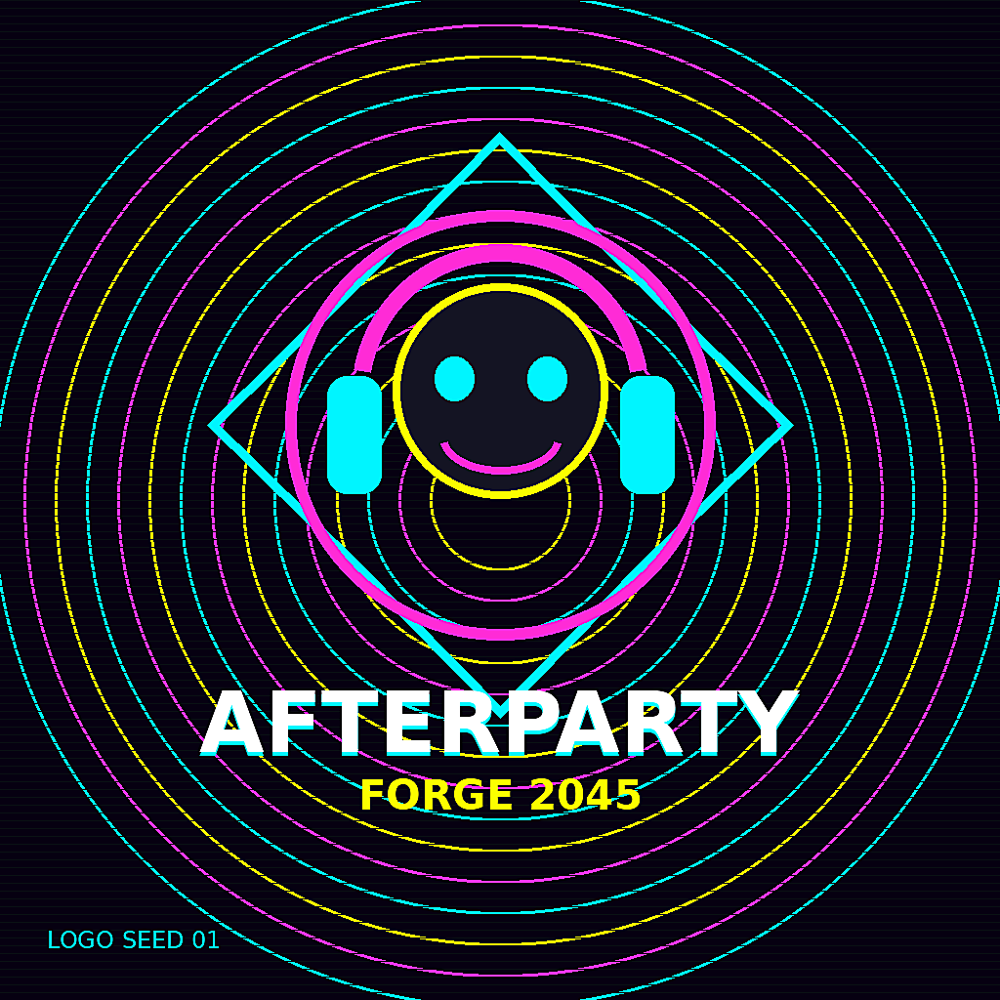
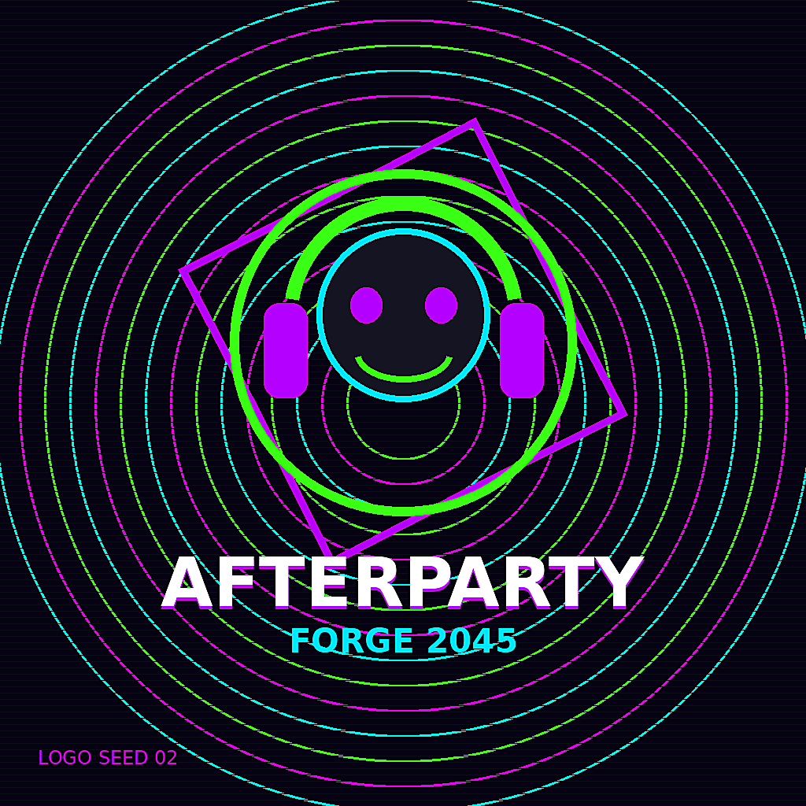
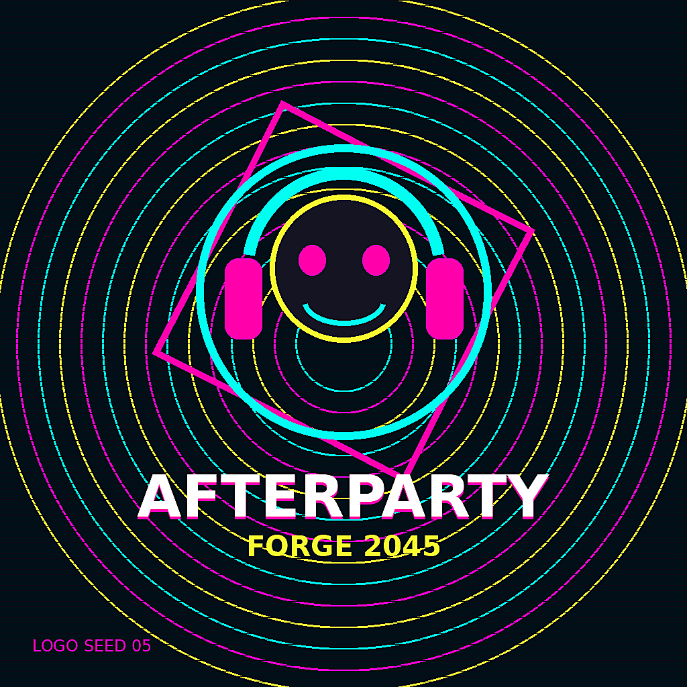
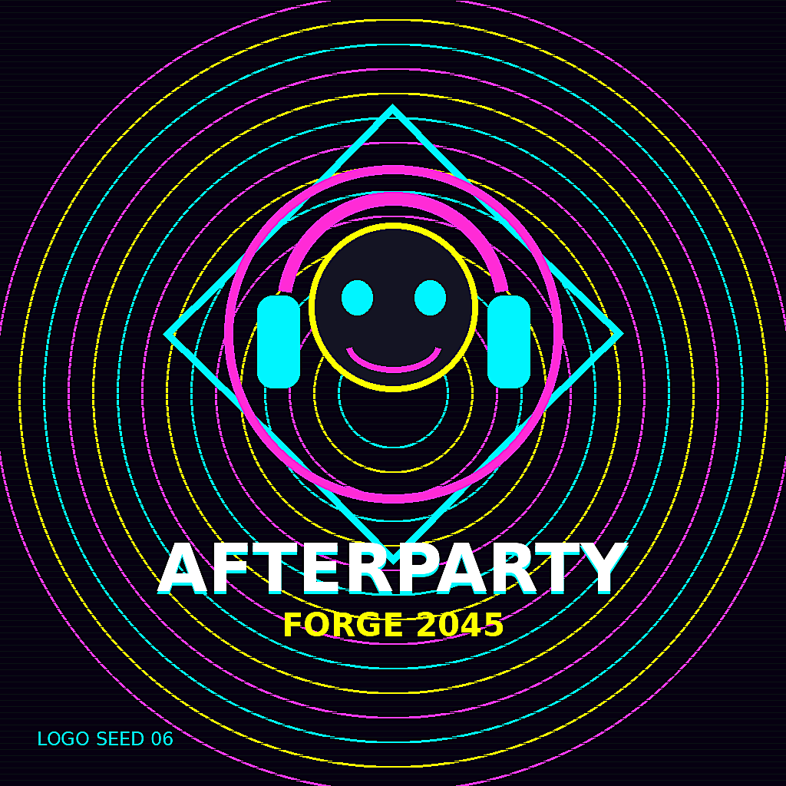
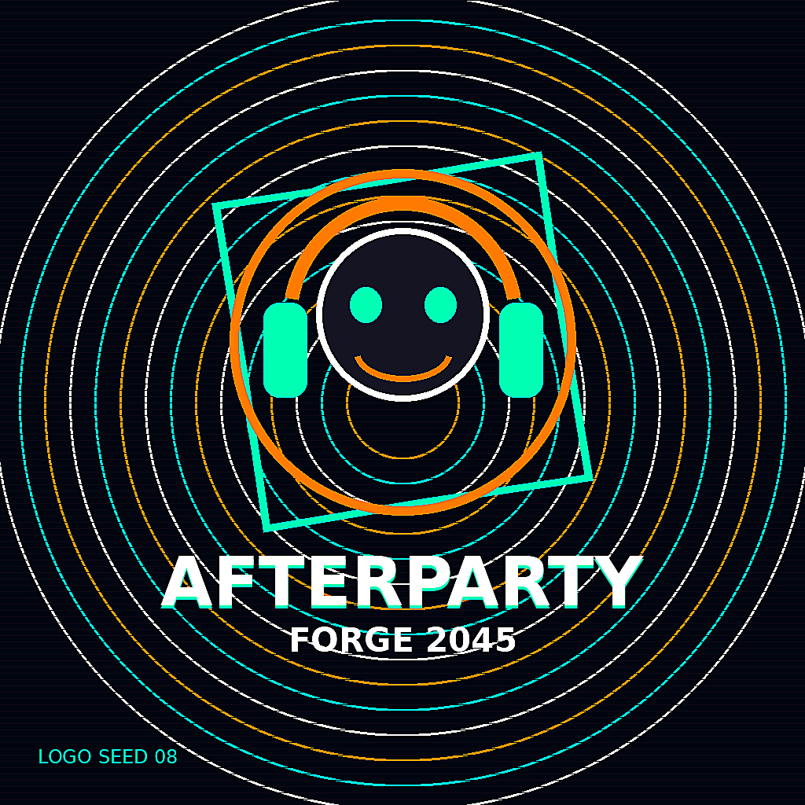
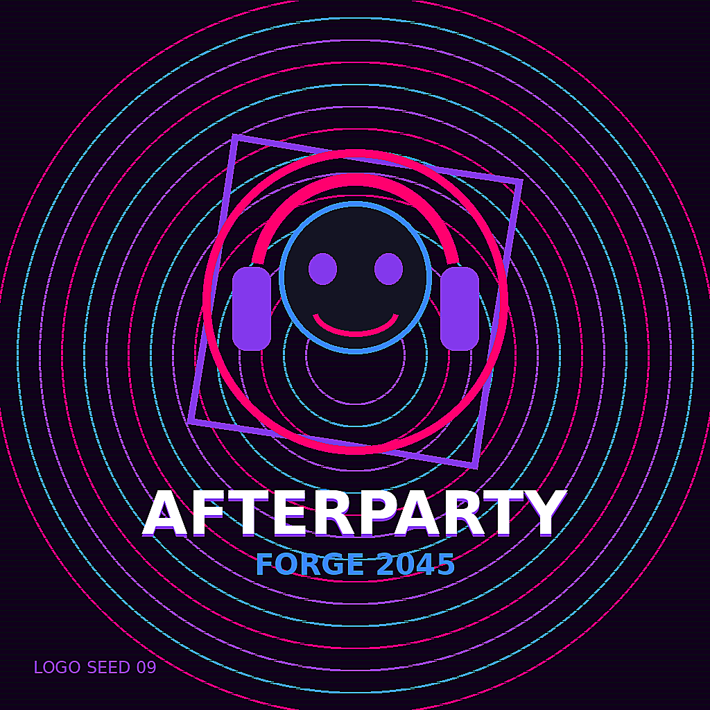
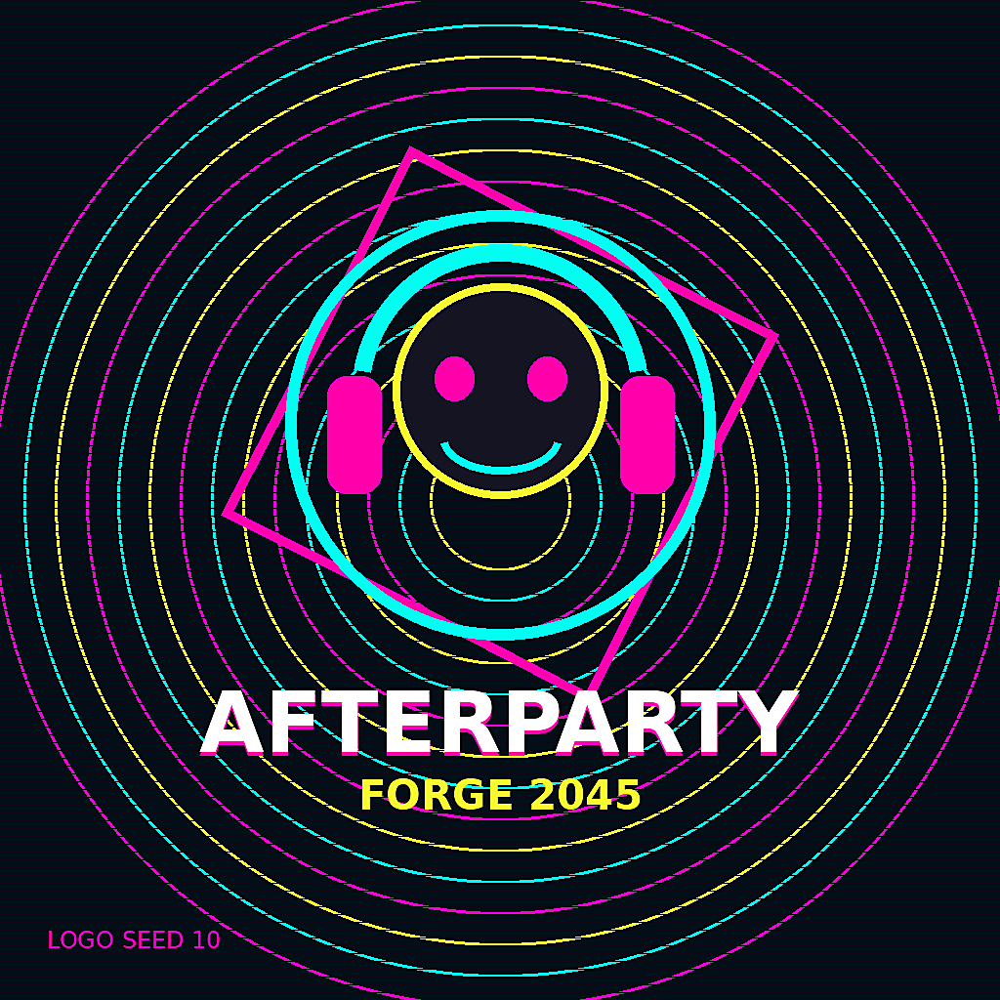
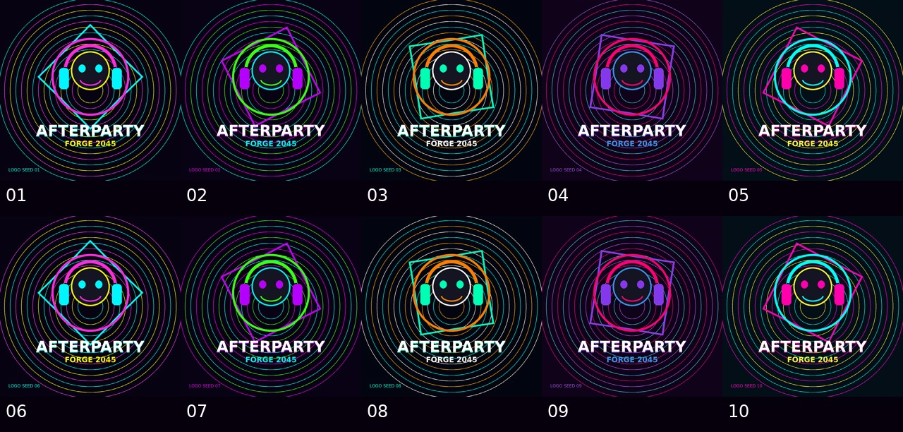

Logo seed 01
Logo seed 02
Logo seed 05
Logo seed 06
Logo seed 08
Logo seed 09
Logo seed 10Failed launch? Remix the signal. Build the entity, dataset, and payload pipeline.
python3 scripts/verify_entity_pipeline.py


Logo seed 01
Logo seed 02
Logo seed 05
Logo seed 06
Logo seed 08
Logo seed 09
Logo seed 10Afterparty Forge 2045 now includes Offer Builder, Launch Packager, Proof Ledger, Demo Router, Revenue Scout, and Unicode Interface Director lanes. Money actions remain closed until human approval.
Three launch-safe X/Twitter draft threads are ready for awake review. No posting, scheduling, outreach, paid boost, checkout link, revenue claim, or affiliation claim is enabled.